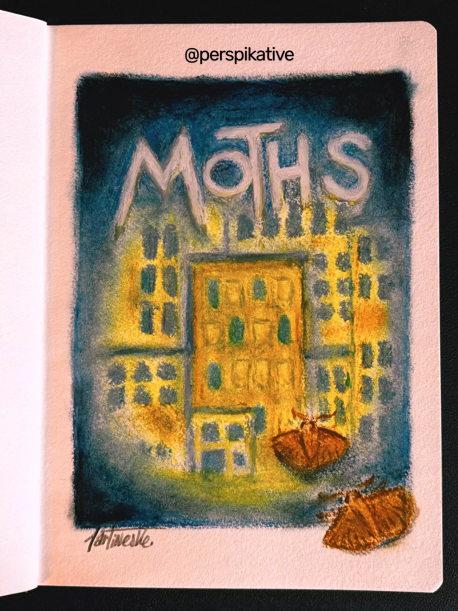
Teintes : Bleus, jaunes, orange, noir, brun et blanc⌛️ Temps de travail : 3h
❇️ Médiums : Pastels gras, crayons de couleurs
💭 Imagination : 50% réfléchie • 40% improvisée • 10% d'Internet
💬 Commentaires :
Dans la sombre ville, un immeuble brillait de tout son éclat. D'un éclat si puissant qu'il semblait éclairer la ville, tandis que, avec les fenêtres ouvertes, des papillons de nuit venaient, attirés par cette lumière tentante, qui les brûlait aussitôt 🥀
🎶 Création inspirée du titre Moths de Conan Gray" data-colors="bleus,jaunes,orange,noir,brun,blanc" />
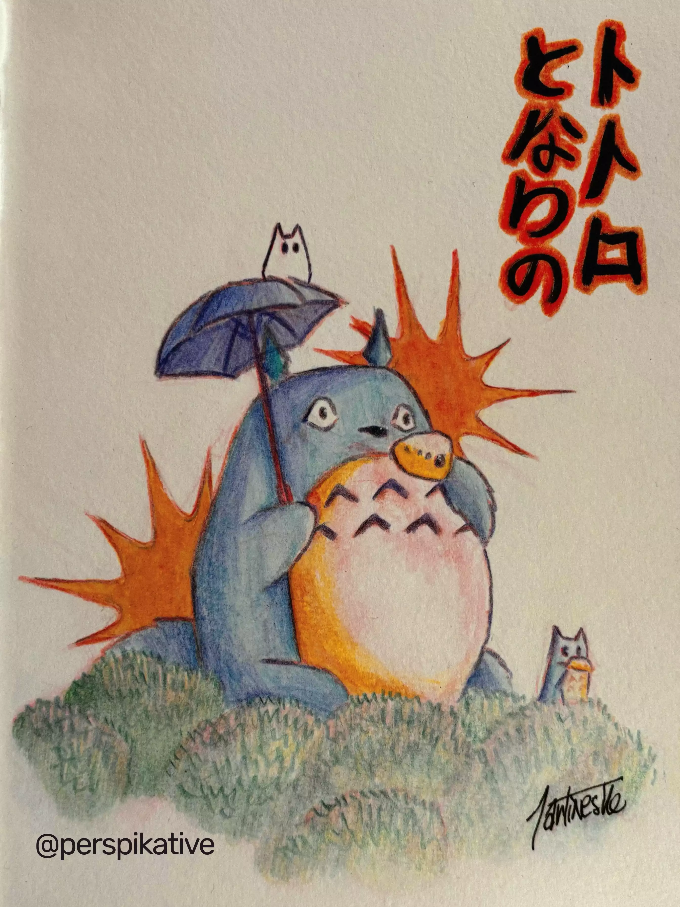
Teintes : Bleu, orange, vert, rose, jaune, violet et brun⌛️ Temps de travail : 1h30
❇️ Particularités : Dessin réalisé en collaboration ; inspiré d'une œuvre
💭 Imagination : 50% d'Internet • 40% réfléchie • 10% improvisée
💬 Commentaires :
となりのトトロ signifie Mon voisin Totoro en japonais, qui est le titre original du film Ghibli réalisé par Hayao Miyazaki. J'ai voulu reprendre cette scène emblématique de la fin de l'œuvre. Pour moi, elle montre toute la sérénité et nonchalance de notre bien aimé Totoro 🍃
En collaboration avec Actu Anime" data-colors="bleu,orange,vert,rose,jaune,violet,brun" />
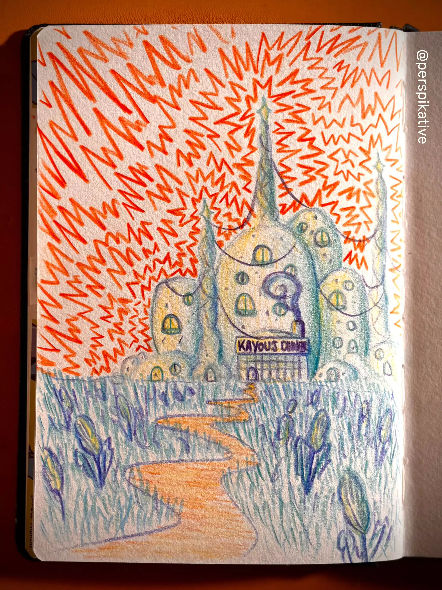
Teintes : Orange, bleu, jaune et violet⌛️ Temps de travail : 1h45
❇️ Particularités : Couleurs flashies
💭 Imagination : 60% réfléchie • 40% improvisée
💬 Commentaires :
Ce petit restaurant dans Kayoupolis, détenu par Mme Roche, était très apprécié dans le quartier. Kayou's Diner, c'était un projet ambitieux dans une ville où cailloux et cacahuètes vivaient sous tension. Mais Mme Roche voulait rapprocher ces 2 races, car elle estimait que les différences ne devaient pas les séparer. Et même si les cacahuètes leurs cassaient les cou*... cacahuètes hum, elle a réussi." data-colors="orange,bleu,jaune,violet" />
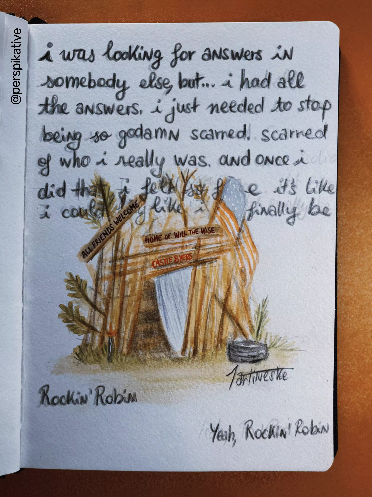
Teintes : Jaune, orange, brun, rouge, bleu et vert⌛️ Temps de travail : 1h
❇️ Particularités : Création déclassée
💭 Imagination : 40% réfléchie • 10% improvisée • 10% d'Internet
💬 Commentaires :
- I was looking for answers in somebody else, but... I had all the answers. I just needed to stop being so gadamn scared. Scared of who I really was. And once I did that, I felt so free. It's like I could fly! It's like I could finally be...
- Rockin' Robin
- Yeah, Rockin' Robin" data-colors="jaune,orange,brun,rouge,bleu,vert" />
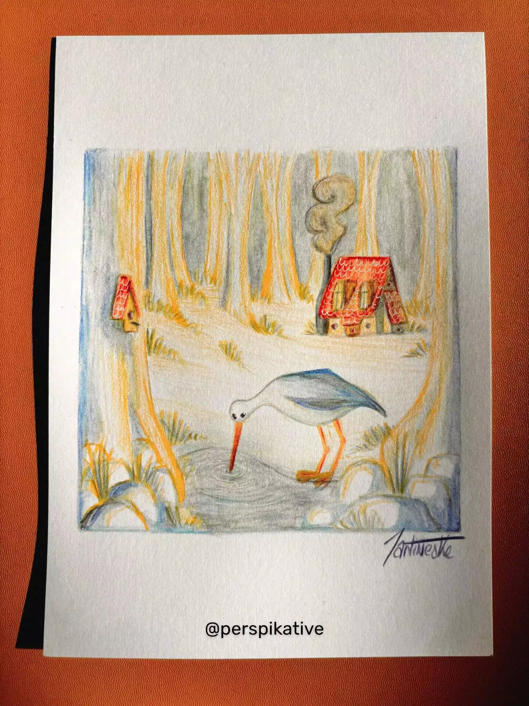
Teintes : Jaune, bleu, rouge et orange⌛️ Temps de travail : 2h30
❇️ Particularités : Composition attrayante, photoshoot de qualité
💭 Imagination : 50% réfléchie • 40% improvisée • 10% d'Internet
💬 Commentaires :
Paraît-il, que les oiseaux migrent pour l'hiver. Ils côtoient mille lieux, s'arrêtent, repartent. Une cigogne égarée alors s'arrêtait, au bord d'un étang, dans une forêt oubliée, tandis qu'une maison la regardait 🪶" data-colors="jaune,bleu,rouge,orange" />
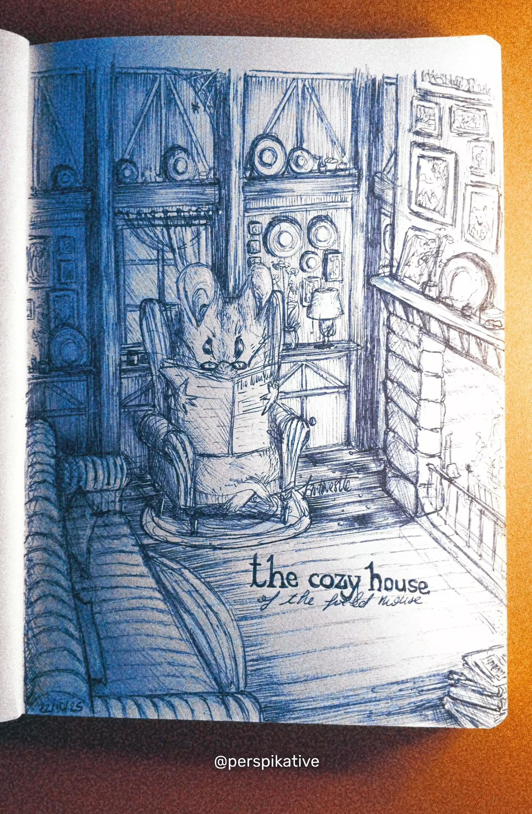
Teintes : Noir et blanc⌛️ Temps de travail : 4h
❇️ Particularités : Première création entièrement réalisée au stylo
💭 Imagination : 90% improvisée • 10% d'Internet
💬 Commentaires :
Je l'ai entendu. Il était au dessus de moi. Je le sais ; il se levait pour prendre un livre et raviver le feu. Il semblait qu'il ait tout fait lui-même : les murs, l'imposante cheminée, les meubles, son parquet. Tout. Et ce fada de lecture et collectionneur d'assiettes en porcelaine nous en cache certainement bien d'autres là haut, dans le plafond… 📰" data-colors="noir,blanc" />
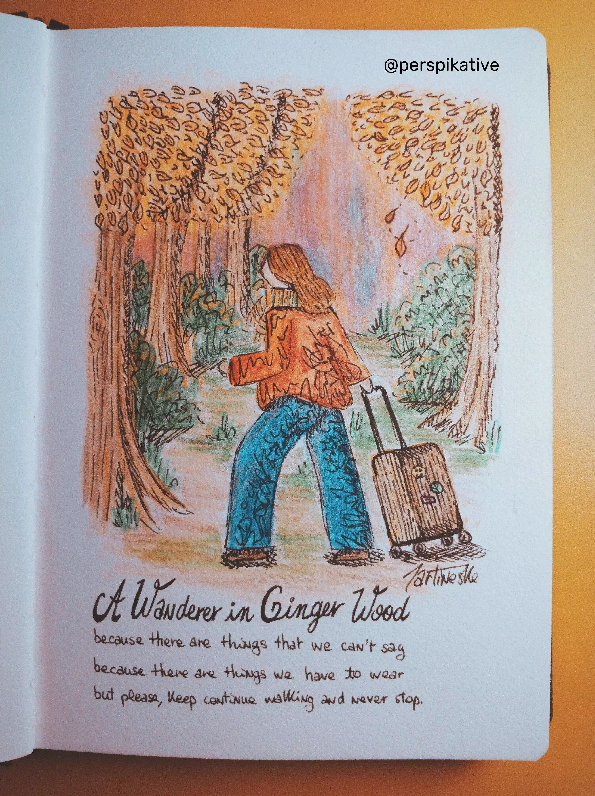
Teintes : Orange, vert, rouge, bleu, rose, jaune et mauve⌛️ Temps de travail : 2h30
❇️ Particularités : Nouveau style graphique expérimenté
💭 Imagination : 60% réfléchie • 40% improvisée
💬 Commentaires :
«Because there are things that we can't say». Parce que parfois, juste marcher ça fait du bien. Parce que l'automne nous accueille, parce que cette fille, qui marche, elle avait juste besoin de ça. Juste de s'échapper quelques instants. Elle reviendra. Ginger Wood fera écho à nouveau 🍁" data-colors="orange,vert,rouge,bleu,rose,jaune,mauve" />

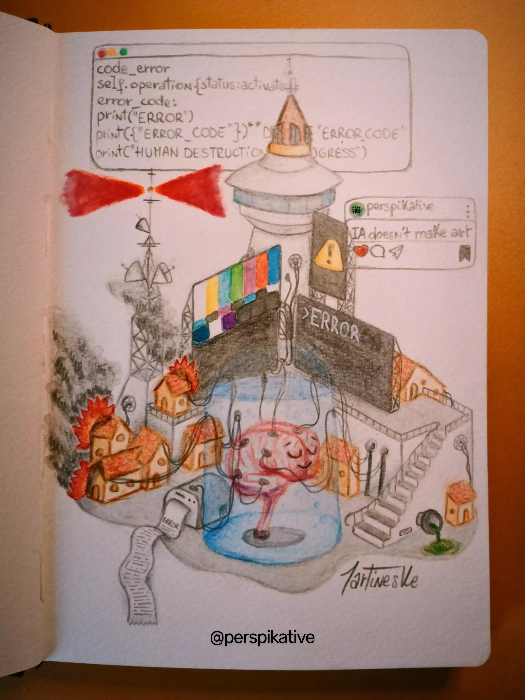
Teintes : Beige, gris, bleu, rouge, jaune, vert, rose, mauve et violet⌛️ Temps de travail : 4h30
❇️ Particularités : Perspective isométrique, contraste marqué et nouvelles techniques expérimentées
💭 Imagination : 50% réfléchie • 40% improvisée • 10% d'Internet
💬 Commentaires :
On l'utilise souvent ou rarement, en lui demandant tout et n'importe quoi. Et elle nous répond. Elle a les réponses à tout. C'est ainsi que je vois l'intelligence artificielle. Sa maison. The IA home. Ce n'est pas qu'une maison d'ailleurs. C'est une usine révolutionnaire, qui malgré elle exploite nos données… quitte à tout à faire 🚨" data-colors="beige,gris,bleu,rouge,jaune,vert,rose,mauve,violet" />

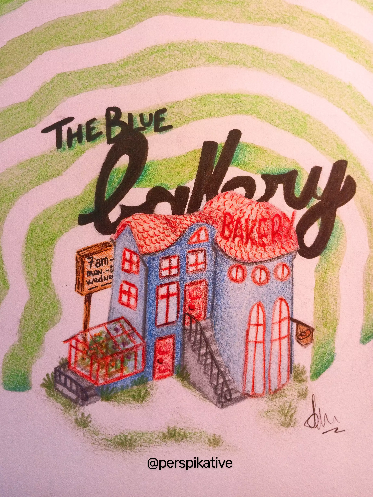
Teintes : Rouge, bleu, vert, brun, orange, mauve et rose⌛️ Temps de travail : 2h30
❇️ Particularités : Perspective isométrique, style d'infographie testé
💭 Imagination : 70% réfléchie • 25% improvisée • 5% d'Internet
💬 Commentaires :
J’étais à l’intérieur dans ce rêve. C'était la nuit, j'étais au premier étage, et les propriétaires de la boulangerie dormaient. The Blue Bakery m’a accueilli une nuit, et je l’ai dessinée pour m’en souvenir 🥖" data-colors="rouge,bleu,vert,brun,orange,mauve,rose" />
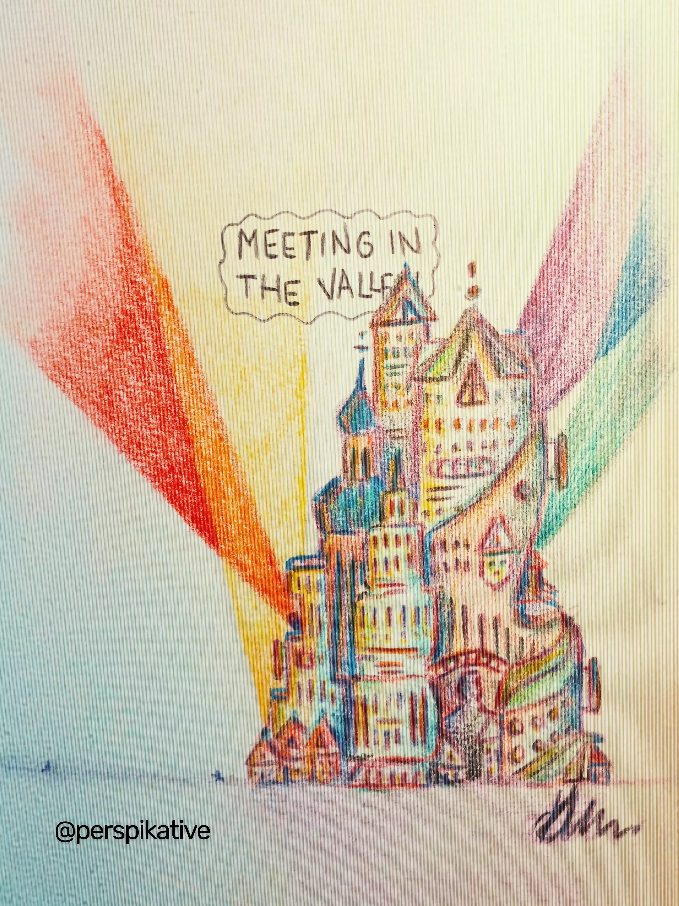
Teintes : Jaune, rouge, orange, bleu, vert, violet, rose et brun⌛️ Temps de travail : 1h30
❇️ Particularités : Police d'écriture dominante, effets de perspective
💭 Imagination : 55% réfléchie • 45% improvisée
💬 Commentaires :
Imaginé et dessiné en deux soirs, cette création pourtant complexe nous embarque dans un rêve matériel. Inspiré d'une vieille histoire que j'ai écrite, ce paysage m'est immédiatement apparu quand j'ai relu un passage. Entrez donc, dans cet imaginaire débordant et envoûtant. Cette ville, dans une vaste plaine blanche, est un grain coloré dans ce monde encore immaculé. Mais il semble que deux personnes vont apprendre à se connaître, et ce meeting in the valley renversera leurs vies… 🪬" data-colors="jaune,rouge,orange,bleu,vert,violet,rose,brun" />
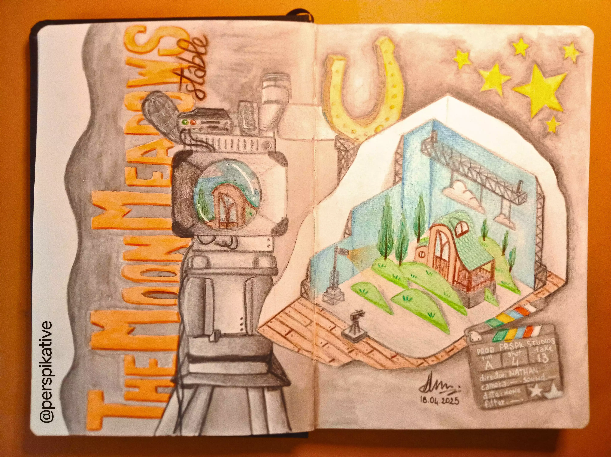
Teintes : Jaune, orange, vert, bleu, gris, brun, rouge et gris⌛️ Temps de travail : 5h30
❇️ Particularités : Deux pages de mon sketchbook, perspective isométrique et semi réaliste
💭 Imagination : 55% réfléchie • 30% improvisée • 15% d'Internet
💬 Commentaires :
Cette fois, cap sur les grands espaces (et les plateaux de tournage!). Silence, moteur… action! Une caméra, une scène, et un cheval prêt à galoper sous les projecteurs : le cinéma et l’équitation se rencontrent dans une création exclusive de collab… Entendez-vous le claquement du clipboarding et le bruit des sabots? 🎬 🐎" data-colors="jaune,orange,vert,bleu,gris,brun,rouge,gris" />

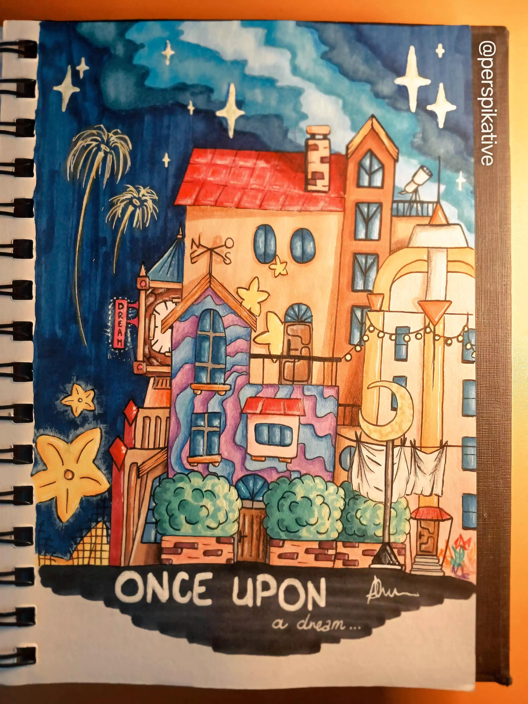
Teintes : Bleu, rouge, beige, jaune, marron, vert, mauve, rose, orange et violet⌛️ Temps de travail : 4h
❇️ Particularités : Perspective plate, mais profondeur de part les ombrages
💭 Imagination : 30% réfléchie • 70% improvisée
💬 Commentaires :
Dans une vallée nichée au plus profond de votre esprit. Oui, des villes entières dans vos têtes. Once upon a dream, c'est la représentation d'un de ces quartiers de nos têtes, dans lesquels on peut y accéder… par le rêve. Un beau voyage intérieur mais quelque peu effrayant ⭐" data-colors="bleu,rouge,beige,jaune,marron,vert,mauve,rose,orange,violet" />
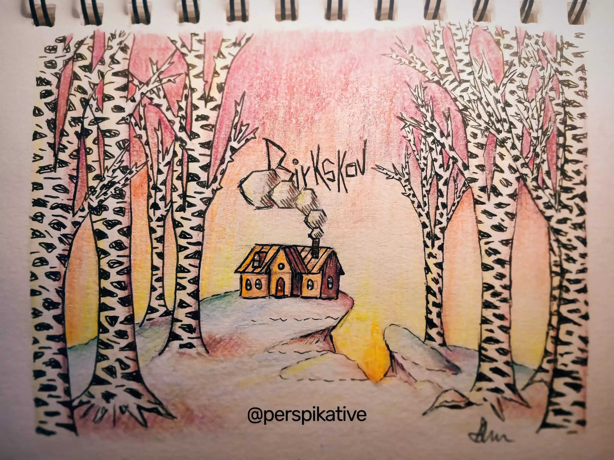
Teintes : Jaune, mauve, blanc et bleu⌛️ Temps de travail : 2h30
❇️ Particularités : Atmosphère apaisante, nouvel essai graphique
💭 Imagination : 60% improvisée • 30% réfléchie • 10% d'Internet
💬 Commentaires :
Birkskov. Signifie «forêt de bouleaux» en danois (sans compter la prononciation danoise, cette création se prononce «Beurk-skov»). Une forêt enchantée où se cache une petite chaumière, un refuge serein au milieu d'une scène hivernale. Cette création représente la beauté est le mystère de l'hiver, et sa simplicité 🌿✨" data-colors="jaune,mauve,blanc,bleu" />

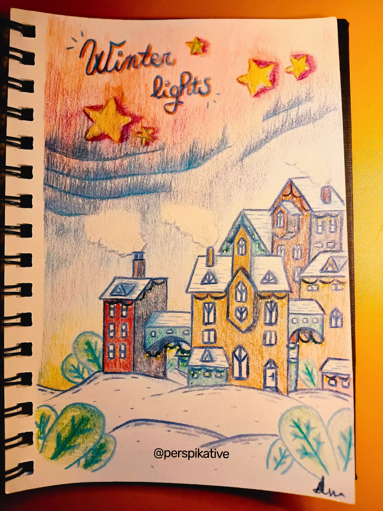
Teintes : Bleu, rose, vert, orange, rouge, mauve, jaune et violet⌛️ Temps de travail : 2h
❇️ Particularités : Une page entière de mon carnet, riche saturation, nouveau style graphique expérimenté
💭 Imagination : 70% improvisée • 15% réfléchie • 15% d'Internet
💬 Commentaires :
Imaginez un village pittoresque, perdu dans l'immensité d'un hiver glacé. Les toits des maisons, couverts de neige fraîche, scintillent sous la lueur des étoiles, tandis que les ruelles étroites, bordées de murs colorés, se faufilent entre les bâtisses comme des sentiers secrets. Laissez-vous porter dans un univers enfantin empli de magie ✨🌨️" data-colors="bleu,rose,vert,orange,rouge,mauve,jaune,violet" />
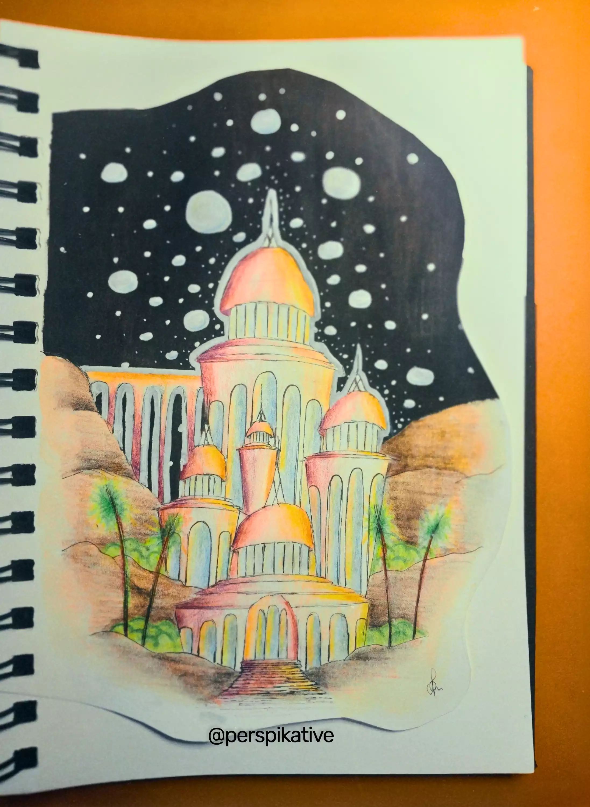
Teintes : Jaune, rose, vert, violet, mauve, rouge, brun, orange et beige⌛️ Temps de travail : 4h
❇️ Particularités : Une page entière de mon carnet, riche saturation, gouache
💭 Imagination : 60% improvisée • 30% réfléchie • 10% d'Internet
💬 Commentaires :
Dans un désert de sable infini, un majestueux palais coloré se dresse. Des centaines de rêves sont créés chaque nuit, et s'élèvent dans le ciel. Les rêves mûrissent au fur et à mesure, et grandissent. C'est la seule illustration qu'on a de ce palais. D'après la légende, il y en aurai bien d'autres partout dans le monde… 🌴🔮" data-colors="jaune,rose,vert,violet,mauve,rouge,brun,orange,beige" />
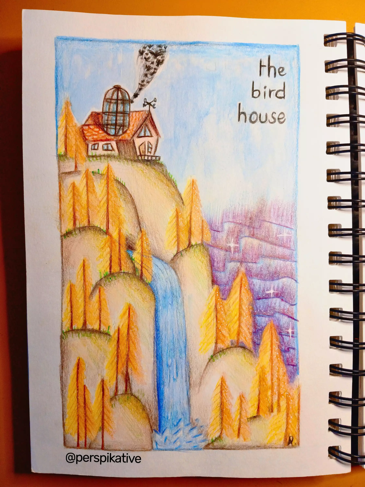
Teintes : Bleu, rose, verts, violet, mauve, rouge, brun, orange et beige⌛️ Temps de travail : 3h30
❇️ Particularités : Une page entière de mon carnet, riche saturation, nouvelle technique expérimentée
💭 Imagination : 65% réfléchie • 35% improvisée
💬 Commentaires :
Cette création est décidément éblouissante. J'étais si impatient de vous la présenter! J'ai imaginé ce projet grâce à une correspondante allemande. C'est l'histoire d'une grand-mère qui adore les oiseaux, et qui les accueillent dans une serre géante. On les voit repartir en vol dans des tons automnaux, avec cet air familier et ce brouillard magique… cette œuvre nous transporte dans un monde éblouissant! 🍁🌌" data-colors="bleu,rose,verts,violet,mauve,rouge,brun,orange,beige" />


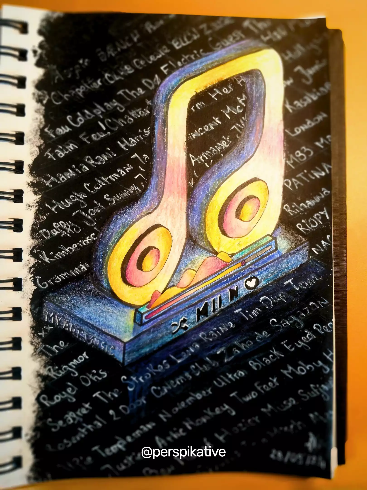
Teintes : Jaune, rose, bleu, vert, violet et mauve⌛️ Temps de travail : 6h
❇️ Particularités : Une page entière de mon carnet, riche saturation, nouvelle expérimentation
💭 Imagination : 50% réfléchie • 40% improvisée • 10% d'Internet
💬 Commentaires :
My Music Art est une création merveilleuse. Elle recense plus d'une cinquantaine d'artistes que j'écoute et que j'aime le plus. La note centrale propage une lumière douce et dynamique sur l'ensemble des noms d'artistes présent sur le sol. Comme un néon géant qui éclaire mes goûts musicaux, avec des vagues de sons. Bref, une belle réussite 🎙️🎶" data-colors="jaune,rose,bleu,vert,violet,mauve" />
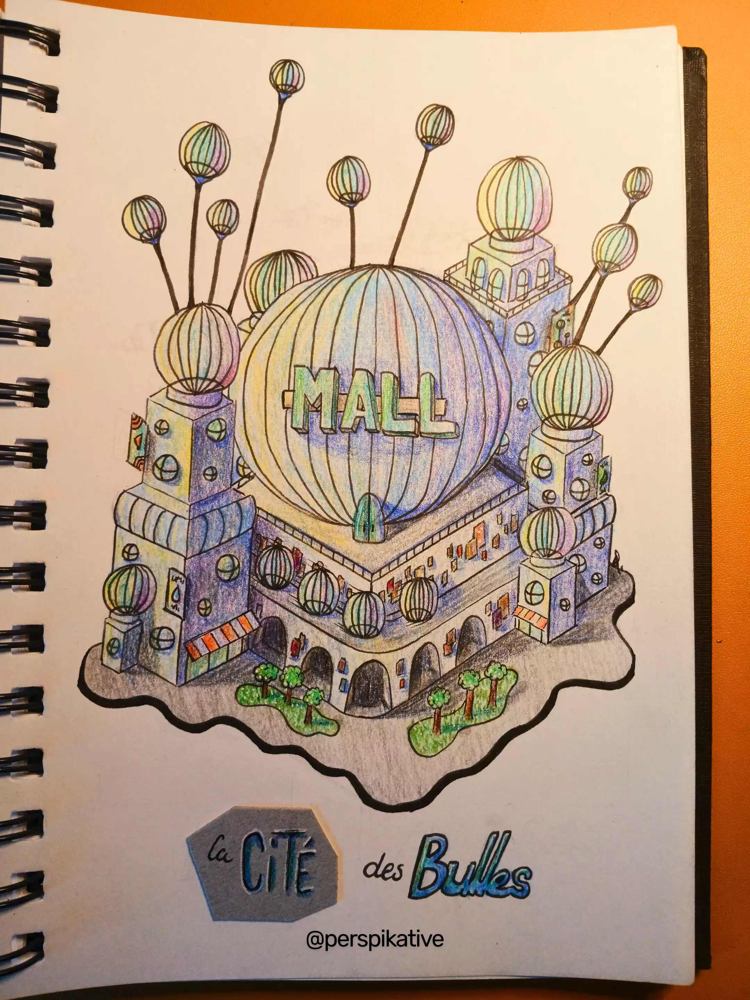
Teintes : Bleu, jaune, vert, beige, rose, brun et gris⌛️ Temps de travail : 5h
❇️ Particularités : Une page entière de mon carnet, riche saturation, couleurs complémentaires
💭 Imagination : 50% réfléchie • 40% improvisée • 10% d'Internet
💬 Commentaires :
La Cité des Bulles! Vous l'attendiez celle-là! Cette ville a tout son charme! Avec ses buildings retro futuristes et ses boules de verre au sommet, on retrouve une ambiance sous-marine, bien que la cité soit terrestre. Ici, les commerces et les affiches publicitaires sont partout. Il y a même le TGV Bubulle qui passe devant le centre commercial (mall en anglais)! Bref, une ville solarpunk qui a tout le mérite de ses habitants les Bubuliens et les Bubuliennes… 🫧🏢" data-colors="bleu,jaune,vert,beige,rose,brun,gris" />

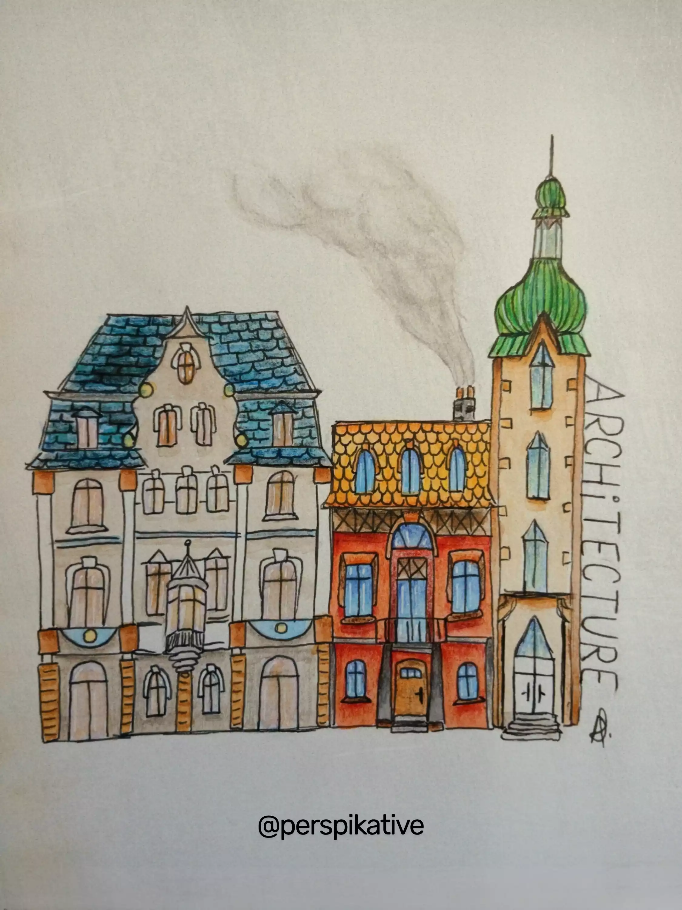
Teintes : Beige, brun, bleu, rouge, gris, vert, jaune, rose et violet⌛️ Temps de travail : 1h30
❇️ Particularités : Une page entière de mon carnet, riches pigments de couleur, riche saturation, perspective plate
💭 Imagination : 50% d'Internet • 40% réfléchie • 10% improvisée
💬 Commentaires :
Cette ruelle, avec des bâtiments inspiré d'une architecture allemande, autrichienne, danoise et polonaise, donne envie de s'y balader. Elle reprend un mélange d'architecture classique de l'Europe Centrale 🏠" data-colors="beige,brun,bleu,rouge,gris,vert,jaune,rose,violet" />

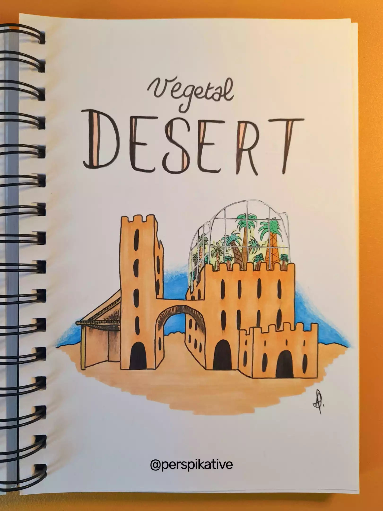
Teintes : Beige, marron, vert, bleu, jaune et argenté⌛️ Temps de travail : 7h15
❇️ Particularités : Une feuille blanche entière, fait à l'aquarelle, riches pigments de couleur, riche saturation, perspective isométrique
💭 Imagination : 70% improvisée • 30% d'Internet
💬 Commentaires :
Au cœur de l'Afrique chaude, lourde et désertique, un coin de paradis s'y cache. Découvrez «Vegetal DESERT», une vieille ruine du désert rénovée en un grand dôme de verre accueillant de nombreuses espèces de palmiers, cactus, cocotier, et bien d'autres… 🥥 Bref, l'oasis moderne niché au milieu du Sahara 😍" data-colors="beige,marron,vert,bleu,jaune,argenté" />

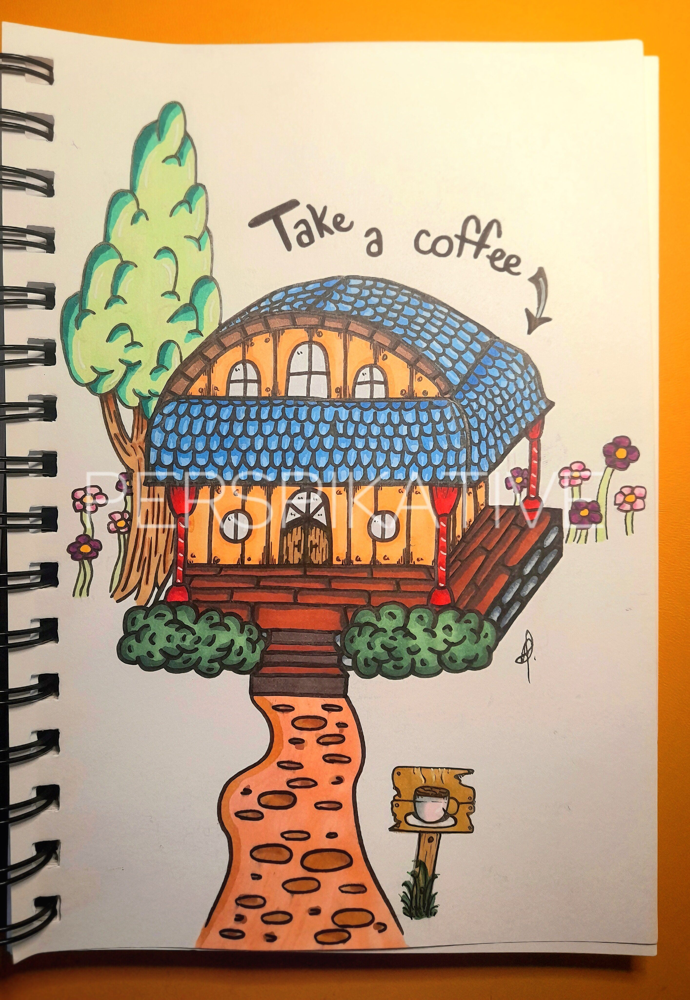
Teintes : Beige, brun, bleu, rouge, gris, vert, rose et violet⌛️ Temps de travail : 2h45
❇️ Particularités : Une page entière de mon carnet, riches pigments de couleur, riche saturation, perspective personnalisée
💭 Imagination : 60% improvisée • 30% réfléchie • 10% d'Internet
💬 Commentaires :
Ce petit café dans le coin, tout le monde la connaît. Il a été bâti depuis des lustres dans cette vallée fantastique et enchantée. Tout le monde sait qu'ici, on y fait les meilleurs cafés du territoire. Alors venez avec moi, Take a coffee! 🤓☕😋" data-colors="beige,brun,bleu,rouge,gris,vert,rose,violet" />

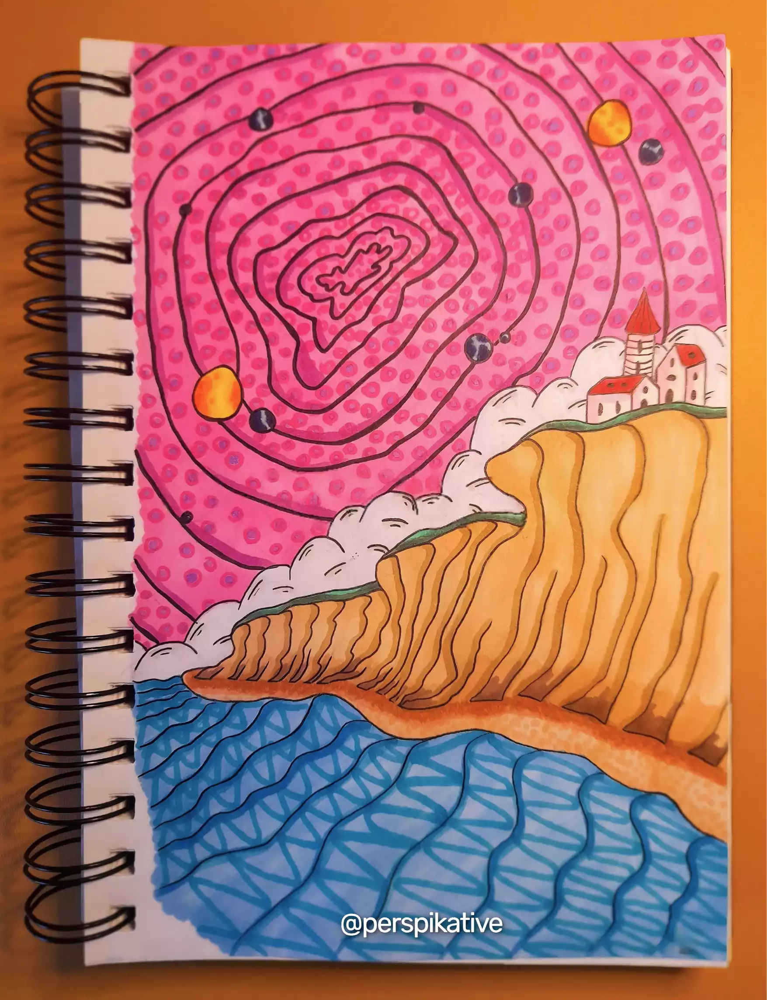
Teintes : Rose, bleu, brun, beige, rouge, orange, jaune, gris, vert et violet⌛️ Temps de travail : 3h15
❇️ Particularités : Mêle deux univers totalement différents, plusieurs couches et nuances de couleurs, technique abstraite et géométrique
💭 Imagination : 80 improvisée • 20% réfléchie
💬 Commentaires :
Dans ce petit village, chaque année à une heure précise, on peut apercevoir un changement de couleur du ciel et observer d'autres planètes venues jusqu'à nous pour cette occasion 🤩🌌🌠" data-colors="rose,bleu,brun,beige,rouge,orange,jaune,gris,vert,violet" />
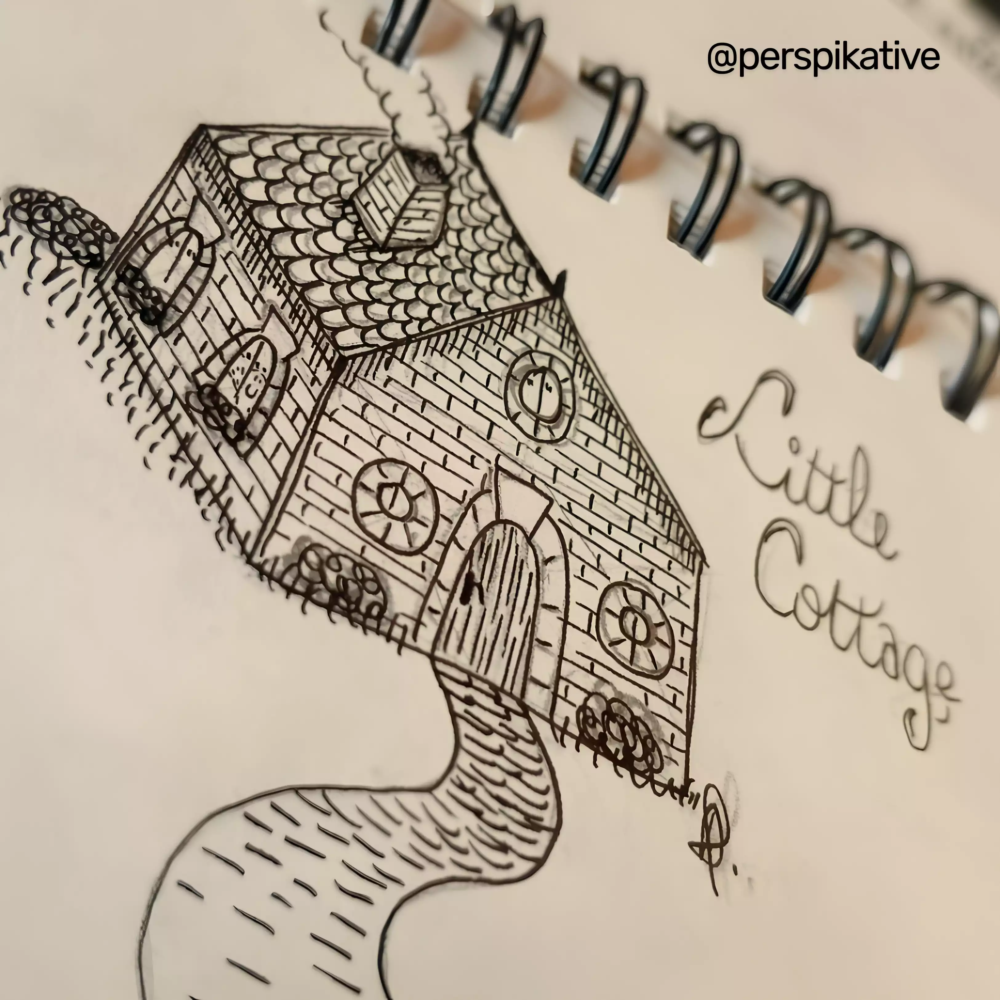
Teintes : Noir⌛️ Temps de travail : 0h30
❇️ Particularités : Dessin en noir et blanc, nouvelle technique d'encadrement de fenêtres" data-colors="noir" />


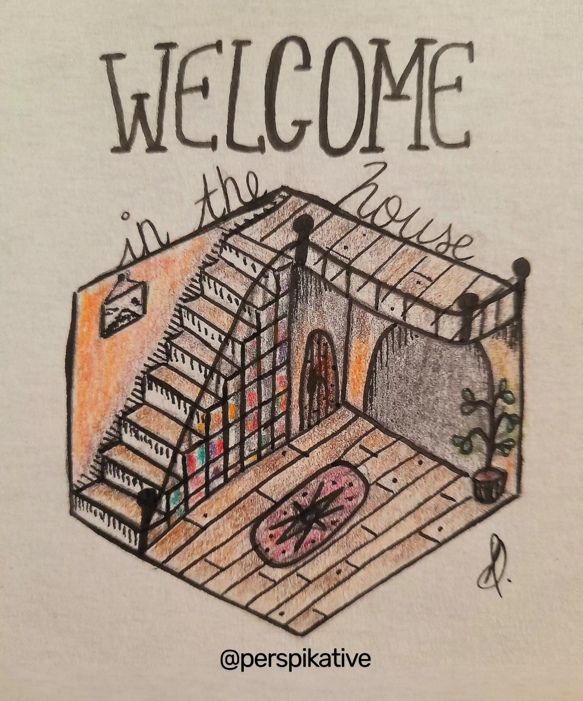
Teintes : Beige, jaune, orange, brun, rouge, vert et violet⌛️ Temps de travail : 1h
❇️ Particularités : Petit format, perspective bien adaptée à la situation de présentation du paysage, texte décalé, donnant une impression de découpage, couleurs assez pales et marquées
💬 Commentaires :
Ahhh! Un intérieur à l'américaine bien chaleureux!" data-colors="beige,jaune,orange,brun,rouge,vert,violet" />
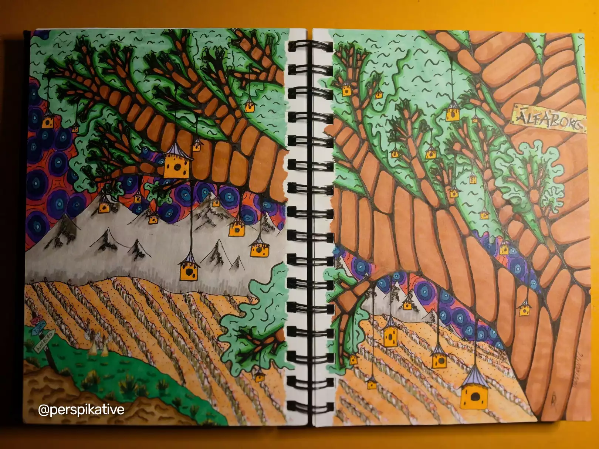
Teintes : Rose, rouge, brun, beige, orange, jaune, vert, bleu et mauve⌛️ Temps de travail : 6h30
❇️ Particularités : Grand format (taille maximale du carnet), grandes variations de pigments de couleurs, beaucoup d'ombres, détails appliqués dans l'ensemble
💬 Commentaires :
Álfaborg est une petite cité dans un arbre, où des Fées vivent entre elles. Álfaborg vient de l'islandais, qui signifie «Ville des Fées». Le dessin représente une scène où deux fées étrangères (en bas à gauche) arrivent dans ce royaume impressionnant. Le ciel est quelque peu imaginaire, avec des cercles quelconques. Même la forme de l'arbre fait allusion à une forme de magie. Sur le panneau d'indication (en bas, tout à droite), on peut lire le mot «Tjörn», qui se traduit en islandais par «Étang». On peut donc aussi en conclure que l'histoire se passe vraisemblablement en Islande." data-colors="rose,rouge,brun,beige,orange,jaune,vert,bleu,mauve" />


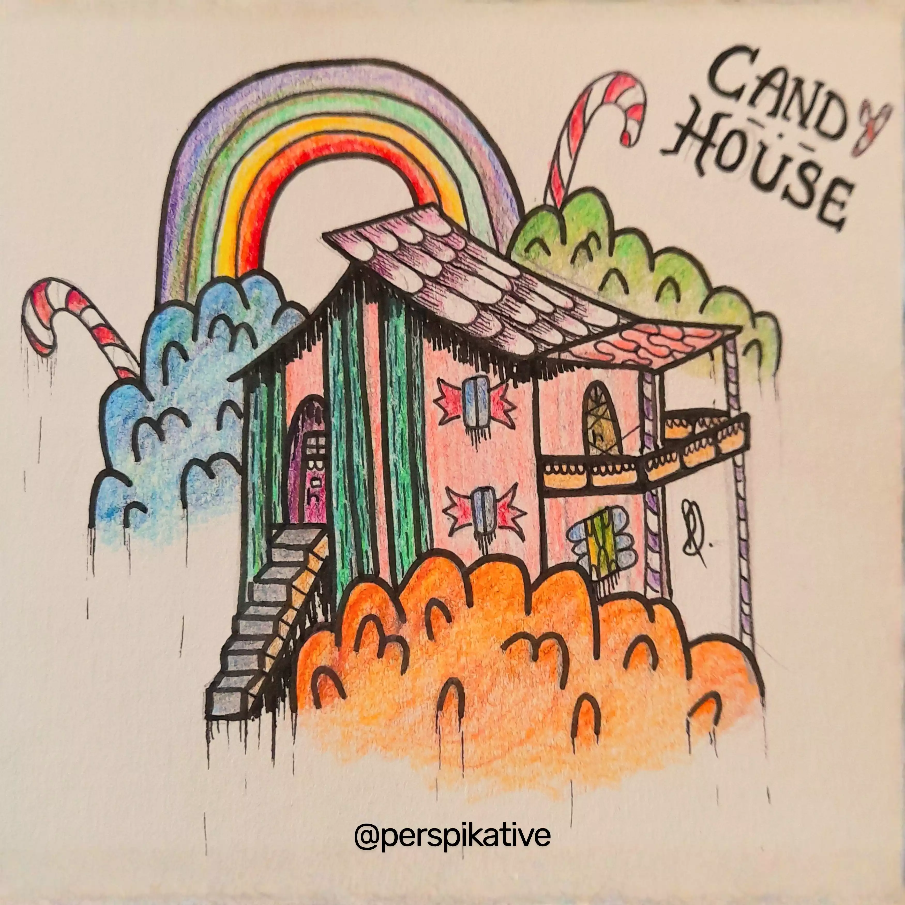
Teintes : Rose, orange, brun, rouge, mauve, bleu, violet et vert⌛️ Temps de travail : 1h
❇️ Particularités : Grande variation de couleurs et pluie de traits, style graffitis
💬 Commentaires :
Vous avez toujours rêvé d'une maison en bonbons? Je crois que l'heure est venue! 😆🍭" data-colors="rose,orange,brun,rouge,mauve,bleu,violet,vert" />

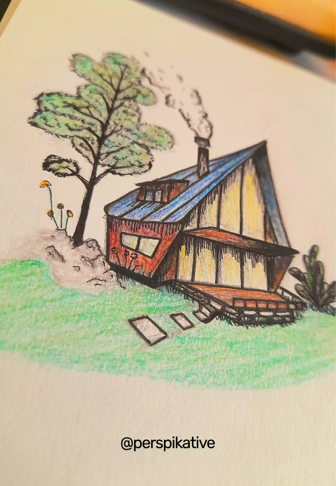
Teintes : Vert, bleu, brun, mauve et rose⌛️ Temps de travail : 1h20
❇️ Particularités : Forme originale et traits fins et détaillés" data-colors="vert,bleu,brun,mauve,rose" />

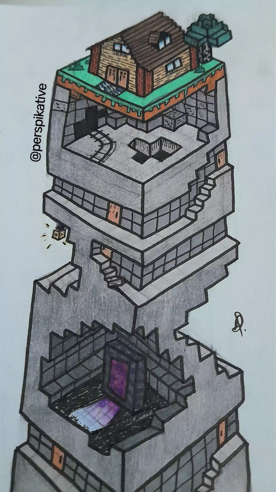
Teintes : Vert, gris, brun et violet⌛️ Temps de travail : 2h
❇️ Particularités : Impression d'enfoncement et réalisme au jeu" data-colors="vert,gris,brun,violet" />
Aucun résultat pour cette combinaison de couleurs